A long-lasting internet meme based on the permanently
displeased expression of a cat named Tardar Sauce.
It became one of the most iconic examples of long-term meme
culture.
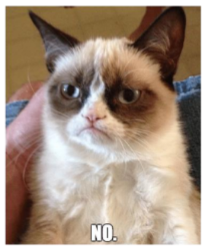
The “Grumpy Cat” meme refers to Tardar Sauce, a cat whose naturally
grumpy appearance turned her into a global internet sensation. Her photo was
first uploaded to Reddit on September 23, 2012, where users suspected the
image was photoshopped due to her unique facial structure caused by dwarfism
and an underbite.
Unlike short-term memes that quickly disappear, Grumpy Cat became a long-term cultural symbol. She inspired countless captions, merchandise, commercials,
and even a book, proving that some memes can outlive the original viral moment
and become part of internet history.
DiCaprio
From-film
A meme originating from a scene in The Great Gatsby, where Leonardo DiCaprio
raises a glass in a celebratory toast. It’s used to express approval,
celebration, or playful encouragement.
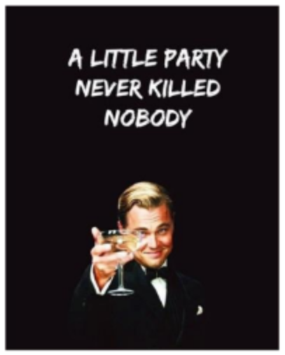
This meme comes from Baz Luhrmann’s film The Great Gatsby (2013).
The iconic frame of Leonardo DiCaprio lifting a champagne glass quickly
entered meme culture due to its expressive and easily adaptable nature.
Originally, the image was used to signify approval or to “toast” something
someone said online. Over time, the meme expanded into a broader symbol of
celebration, encouragement to party, or ironic motivation. One of the most
popular versions includes the text:
"A little party never killed nobody"
referencing a song from the movie’s soundtrack and reinforcing the meme’s
association with fun and carefree indulgence.
EA FIFA
Local
A local meme understood mainly by gamers, especially fans of the FIFA series.
It mocks EA Sports for releasing nearly identical FIFA installments each year
while ignoring criticism.
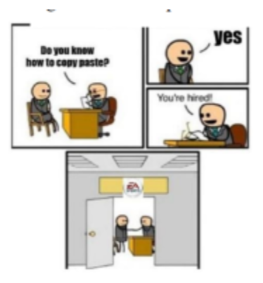
This meme represents a local or specialized meme—one that is understood
mostly within a specific community. In this case, the gaming community,
particularly FIFA players.
The joke usually shows a job interview where the applicant is only asked:
"Do you know how to copy and paste?"
When the candidate answers "Yes", the interviewer replies:
"You're hired!"
The humor comes from the stereotype that EA Sports releases the same FIFA game
every year, making only minimal changes while still receiving consistently
low ratings. The meme expresses players’ frustration with the company’s
business model in a humorous way.
Mr. Incredible
Co-opted
Co-opted memes are memes that were not intentionally created to go viral but
suddenly gained widespread popularity after being noticed and repurposed by
internet users. A well-known example comes from the animated film
The Incredibles.
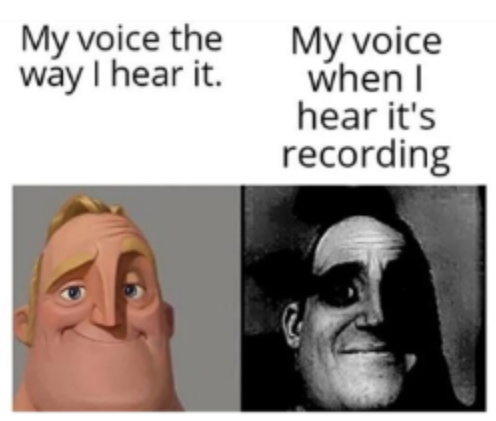
This image represents a co-opted meme. It originates from the animated
film The Incredibles. Characters from this movie—especially Mr. Incredible—
have repeatedly become the basis for viral memes.
On October 15, 2020, an artist on Twitter posted a series of illustrations
depicting realistic versions of various cartoon characters. Among them was a
humanized version of Bob Parr (Mr. Incredible). Within days, the image spread
rapidly across social media platforms, inspiring countless variations and
turning into a widespread meme format.
This case demonstrates how content not originally intended as a meme can gain
massive popularity once the internet community recognizes its comedic or
symbolic potential.
CAN HAS CHEEZBURGER
Chronologically-iconic
One of the earliest and most recognizable internet memes featuring intentionally
incorrect grammar: "I Can Has Cheezburger?"
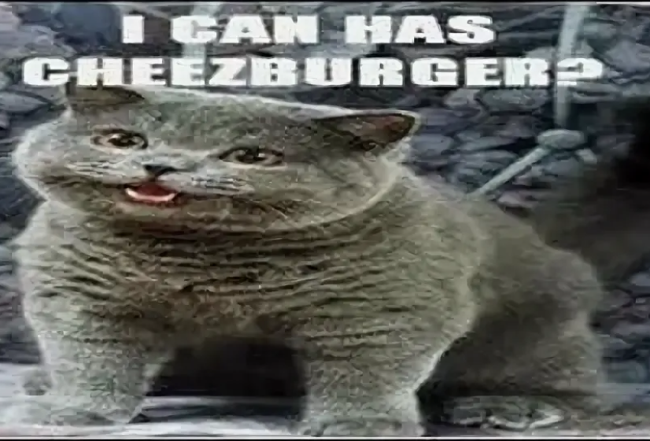
The "I Can Has Cheezburger?" meme emerged in 2007 from an image of a cat
reaching for food while a caption mimicked childlike, grammatically incorrect
speech. The phrase purposely contains multiple mistakes: missing articles,
incorrect word order, and the humorous misspelling cheezburger.
This style of captioning eventually became known as LOLspeak, which shaped
early meme culture and influenced the development of modern internet humor.
Its popularity led to the creation of the website icanhas.cheezburger.com,
one of the biggest platforms for user-generated memes.
This meme is classified as a chronologically iconic meme—one that has existed
long enough to be recognized as part of the foundational history of internet
culture.
Frank
Phonetic
A wordplay meme based on the name Frank and the adjective
frank, which means “honest” or “open.”
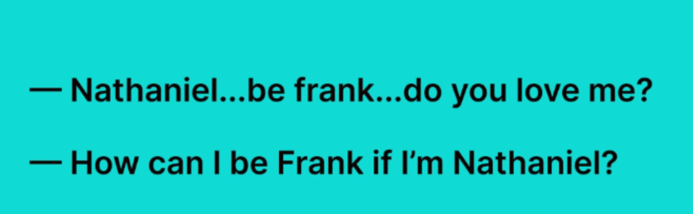
This meme relies on a simple yet effective pun. In English, Frank is a
male name, while frank is an adjective meaning “honest.” The joke presents
a dramatic dialogue that becomes absurd due to this ambiguity.
A rough translation of the interaction:
— Nathaniel… be frank… do you love me?
— How can I be Frank if I’m Nathaniel?
The humor comes from the character misunderstanding the expression
“be frank” as a request to literally become a person named Frank.
This type of meme is especially common in English, where identical
spellings often carry unrelated meanings.
Pacific Ocean
Phonetic
A meme about intrusive thoughts before falling asleep — in this case, the sudden
realization that each letter “C” in Pacific Ocean is pronounced differently.
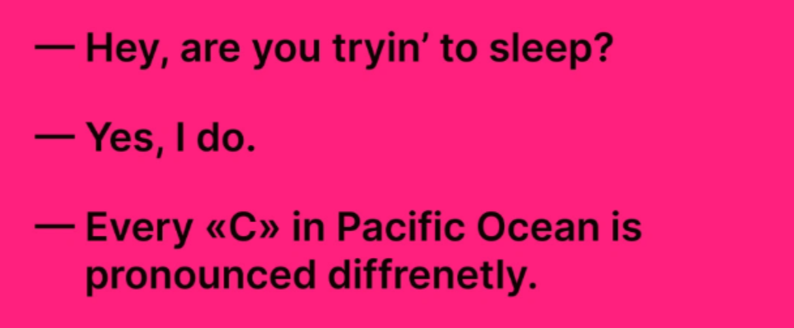
This meme captures the familiar situation where random, unnecessary thoughts
appear right before sleep and keep you awake. The character suddenly realizes
that in the phrase Pacific Ocean, each letter C has a completely different
pronunciation.
In phonetic transcription, the phrase looks like this:
[pəˈsɪfɪk ˈoʊʃən]
If written out for Russian speakers, it would resemble Пасифик Оушен.
The surprising discovery of three distinct sounds represented by the same
letter perfectly reflects the kind of odd, overthinking thoughts that strike
at night and prevent you from falling asleep.
Interesting
Phonetic
A fully phonetic meme based on how the phrase into resting sounds almost
identical to interesting when spoken quickly.
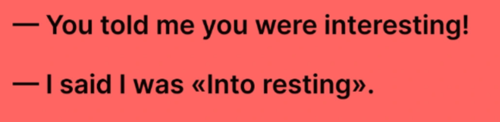
This meme plays with phonetics — how words sound when spoken aloud. In the
dialogue, one person says:
— You told me you were interested!
— I said I was into resting.
When pronounced rapidly, into resting becomes nearly indistinguishable from
interesting. Because of this, the innocent phrase “I’m into resting”
(meaning “I enjoy relaxing” or “I’m taking a break”) is misheard as
“I’m interested.”
The humor relies entirely on pronunciation rather than spelling, making this
a classic example of a phonetic meme.
Bottle of Water
British
A meme illustrating the British RP (Received Pronunciation) accent through the playful distortion of the phrase “bottle of water.”
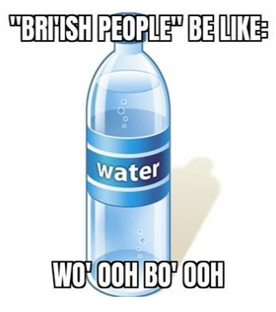
This meme features a bottle of water and highlights how the aristocratic British RP accent affects pronunciation. One of the key characteristics of this dialect is the partial “swallowing” of consonants and a tendency to use a more rounded “o” sound instead of “a.”
For this reason, the standard phrase "bottle of water" transforms into the exaggerated version "bo'ooh o wo'ooh."
Such memes are popular examples of how English pronunciation varies across dialects and how small phonetic changes can dramatically alter the way familiar words sound.
Pirates
Grammar
A meme that plays with pirate-style speech by deliberately inserting grammatical errors.
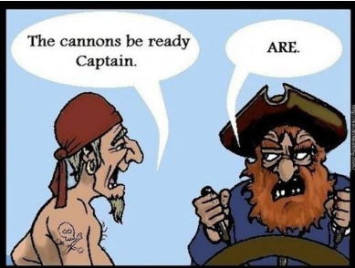
This meme intentionally features playful spelling and grammatical mistakes to imitate traditional pirate speech. In the scene, one pirate says:
“The cannons be ready, Captain.”
The sailor incorrectly uses the verb “be” in the infinitive form when referring to the cannons. The captain corrects him with the word “ARE”, which is both grammatically proper and humorously similar to the classic pirate exclamation “arrrr.”
This blend of accurate grammar and stylized pirate slang is what makes the meme entertaining.
Past vs Now
Contrast
A meme contrasting childhood ambitions with the simple desire for happiness in adulthood.
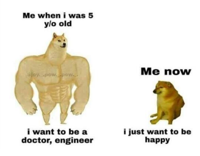
This meme illustrates the contrast between two different states of a person’s life. The first line shows the optimistic dreams of childhood:
“Me at 5: I want to be a doctor, an engineer.”
The second line shifts to adulthood, where priorities change dramatically:
“Me now: I just want to be happy.”
The humor — and emotional weight — come from the contrast between early ambition and adult reality. What begins as a set of big, confident goals transforms into a simple wish for emotional well-being and stability.
Croissant
Visual
A meme comparing the dramatic disintegration scene from Avengers: Infinity War with the way a croissant crumbles.
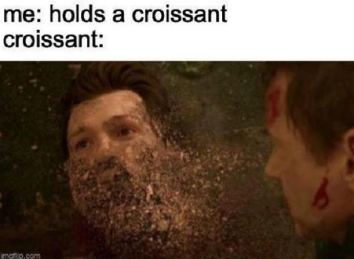
This meme originates from the film Avengers: Infinity War, in which Spider-Man gradually disintegrates into small particles before disappearing. This iconic scene became widely used in internet culture.
The meme draws a humorous analogy with a croissant, a pastry known for its flaky, layered dough. Because of its delicate structure, a croissant easily crumbles into tiny flakes — visually similar to the dust-like effect shown in the movie.
The comedic effect comes from the contrast between a dramatic cinematic moment and an everyday, relatable experience: the unavoidable mess of eating a croissant.